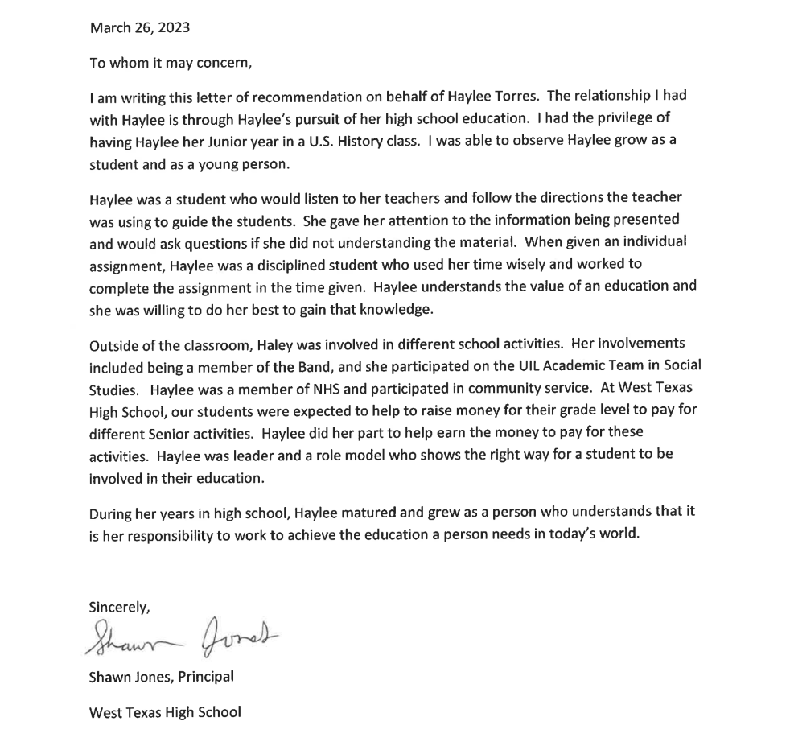

Skills/Letter of Recommendation
Work Skills
Subbing for almost two semesters in grades 5-8 has taught me adaptability, clear communication, and how to use technology effectively. These skills are essential for my goal of becoming a software developer. I quickly adjust to different classrooms, ensure every student's needs are met, and use tech to enhance learning. I'm excited to bring these skills to software development, where problem-solving and innovation are key.
MyPlan Results
My MyPlan test results highlighted my strengths in achievement, working conditions, relationships, recognition, support, and independence. I'm driven to excel, thrive in supportive environments, value connections, appreciate acknowledgment, enjoy teamwork, and cherish autonomy. With this understanding, I'm committed to utilizing these strengths effectively in my pursuits, striving for excellence, and making positive contributions to every project.
MyPlan Results Part 2
These qualities make me well-suited for software development. I'm driven to achieve goals, adaptable to different work environments, and skilled at collaborating effectively in teams. Building strong relationships with colleagues enhances communication and teamwork, crucial in developing complex software. Recognition and support fuel my motivation, ensuring dedication to tasks. Additionally, my independence allows me to take ownership of projects, innovate, and solve problems autonomously, all valuable traits in the software development field.
Letter of Recommendation
Get in Touch
First name:Last name:
Phone Number: